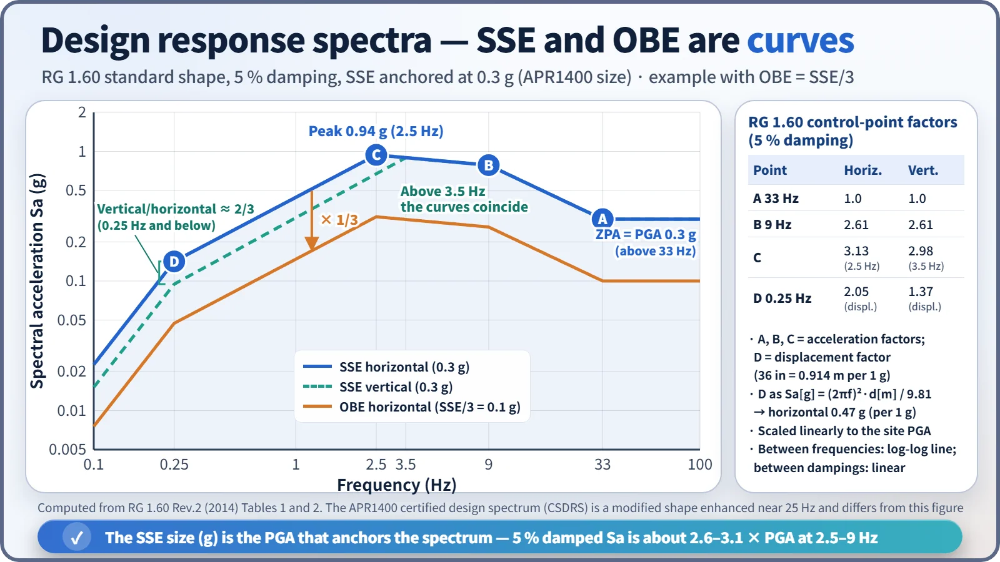
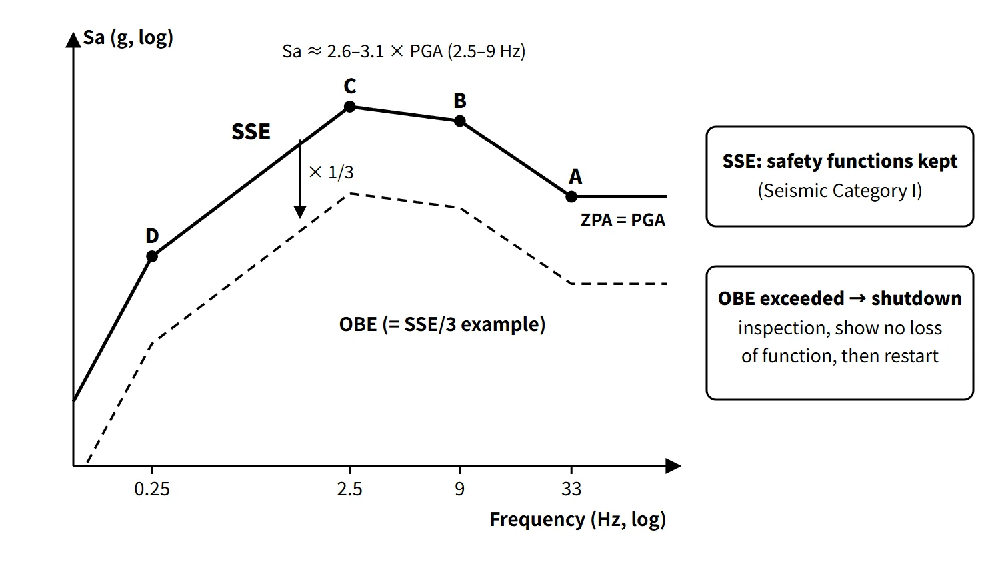

Accidents, Safety Analysis & Severe Accidents · C-SA-012
Safe Shutdown Earthquake (SSE) and Operating Basis Earthquake (OBE) — Two Levels of Design Earthquake and the Shutdown Decision
SSE keeps safety functions, OBE decides whether the plant must shut down — defined as response spectra anchored at a peak ground acceleration.
The safe shutdown earthquake (SSE) is the maximum design ground motion for which structures, systems and components (SSCs) important to safety are designed to remain functional; the operating basis earthquake (OBE) is the ground motion for which the equipment needed for continued operation without undue risk to the public remains functional, and under current US rules it serves mainly as the criterion for shutting down and inspecting the plant.
Both are defined as horizontal and vertical design response spectra of the free-field motion at the site, and their size is quoted as the peak ground acceleration (PGA, in g) at which the spectrum is anchored. The term "design basis earthquake (DBE)" is usually used with the same meaning as the SSE.
Principle and mechanism
Why two levels?
| SSE | OBE | |
|---|---|---|
| Goal | Keep safe shutdown and cooling, prevent release of radioactive material | Continued operation possible (criterion for shutdown) |
| Nature | Based on the maximum earthquake potential of the site | An earthquake that may occur during the plant lifetime |
| Permitted state | Functions maintained (some inelastic behaviour allowed) | Elastic range, normal operation possible |
| Size (current App. S) | Horizontal PGA at least 0.1 g | No separate analysis needed if at most 1/3 of the SSE |
| Size (former Part 100 App. A) | At least 0.1 g | At least 1/2 of the SSE maximum acceleration |
Under the former rule (OBE ≥ SSE/2), the allowable stresses for the OBE load combinations were strict, so in practice the OBE often governed the design rather than the SSE. Because of this excessive conservatism, 10 CFR 50 Appendix S (App. S, 1997) allowed the OBE design analysis to be omitted if the OBE is set at no more than 1/3 of the SSE. Even then, the OBE remains as the criterion for shutdown and inspection.
Design response spectra (RG 1.60)
A response spectrum is a curve of the maximum response of single-degree-of-freedom oscillators with a given damping to a ground motion, plotted against their natural frequency. RG 1.60 gives a standard shape normalized to a PGA of 1.0 g and a maximum displacement of 36 in, in the form of amplification factors at control points.
| 5 % damping | A 33 Hz | B 9 Hz | C | D 0.25 Hz (displacement) |
|---|---|---|---|---|
| Horizontal | 1.0 | 2.61 | 3.13 (2.5 Hz) | 2.05 |
| Vertical | 1.0 | 2.61 | 2.98 (3.5 Hz) | 1.37 |
- Above 33 Hz is the ZPA (= PGA); C→B→A is the acceleration region, D→C the velocity region, and below D the constant-displacement region (Sa ∝ f²).
- Converting the displacement factor at point D to acceleration gives, horizontally, Sa = (2π·0.25)²·(2.05×36 in)/g ≈ 0.47 g.
- The vertical/horizontal ratio is 2/3 at 0.25 Hz and below and 1 at 3.5 Hz and above. So in RG 1.60 the vertical ZPA equals the horizontal ZPA. "Vertical = 2/3 of horizontal" holds only in the low-frequency range.
- The actual spectrum is scaled linearly by the site PGA (straight lines on log-log axes between control points, linear interpolation between damping values). For a 0.3 g SSE the horizontal peak (2.5 Hz) is 0.94 g, and with OBE = SSE/3 it is 0.31 g. This means that the spectral acceleration at 2.5–9 Hz is about 2.6–3.1 times the PGA; actual structural loads are obtained by structural response analysis.

For new US sites, the SSE is now set from the ground motion response spectrum (GMRS) based on probabilistic seismic hazard analysis (PSHA) under 10 CFR 100.23 and RG 1.208. RG 1.60 remains as the licensing basis of existing plants and as the shape of the "minimum input anchored at 0.1 g". The APR1400 certified seismic design response spectrum (CSDRS) is a high-frequency-enhanced shape based on RG 1.60, raised by 30 % around 25 Hz.
What it means in a plant
Design: seismic categories and load combinations
- Seismic Category I: safety-related items. They must keep their safety functions at the SSE and, if the OBE is used as a design input, stay within allowable stresses under OBE plus normal loads.
- Seismic Category II: items whose collapse or fall could damage Category I items. Only structural integrity at the SSE is required.
- Seismic Category III: follow general industrial codes.
A design that eliminates the OBE (OBE ≤ 1/3 SSE) makes up for the lost conservatism with substitute requirements, for example on seismic fatigue cycles, equipment seismic qualification and a PSA-based seismic margin assessment (SMA).
Design values of example reactor types
- OPR1000: SSE 0.2 g, OBE 0.1 g (= SSE/2, former scheme)
- APR1400: SSE 0.3 g, OBE = SSE/3
Operation: judging OBE exceedance and shutting down
App. S requires that if vibratory ground motion exceeds the OBE or significant damage occurs, the plant be shut down, and that before restart it be demonstrated that the equipment needed for continued operation has no functional damage and that the licensing basis is maintained. PGA alone says little about damage potential, especially for earthquakes rich in high frequencies, which can produce a large PGA with small CAV and low-frequency spectral values. For this reason the judgement also uses the response spectrum and indicators such as CAV.
- US RG 1.166 (based on EPRI NP-5930 and NP-6695; the 2020 Rev.1 absorbed the restart guide RG 1.167): the OBE is exceeded only if both of the following checks are exceeded.
- Response spectrum check: exceeded if the 5 % damped spectrum of any one of the three free-field components exceeds max(OBE Sa, 0.2 g) at 2–10 Hz, or max(OBE Sv, 6 in/s) at 1–2 Hz.
- CAV check: standardized cumulative absolute velocity CAV > 0.16 g·s. For each 1-second window, if |a| exceeds 0.025 g at least once, ∫|a|dt over that window is added.
![Flow chart from a free-field three-component strong-motion record to the OBE exceedance decision: US RG 1.166 requires both a response-spectrum check (2–10 Hz above max(OBE Sa, 0.2 g) or 1–2 Hz above max(OBE Sv, 6 in/s)) AND CAV above 0.16 g·s, with a side panel explaining why PGA alone is not enough for high-frequency-rich motion; exceedance leads to shutdown, walkdown inspection, damage evaluation and a demonstration before restart; a free-field seismometer photo and a CAV definition card on the left](../../assets/images/concepts/c-sa-012-sse-obe/fig2-obe-exceedance-flow.webp)
Separately, plants with an automatic seismic trip system (ASTS) trip the reactor automatically above its setpoint.
Regulatory and design criteria
The criteria below are US examples; 10 CFR 50 Appendix S and RG 1.60 are widely used as reference points for seismic design.
| Basis | Key point |
|---|---|
| 10 CFR 50 App. S (1997) | Definitions of SSE and OBE, minimum 0.1 g, OBE 1/3 option, shutdown on OBE exceedance and demonstration before restart, seismic instrumentation |
| 10 CFR 100 App. A (1973) | Plants with construction permits before 1997: OBE ≥ SSE/2 |
| 10 CFR 100.23, RG 1.208 | PSHA-based GMRS → SSE for new sites |
| RG 1.60 Rev.2 (2014) | Shape and control-point amplification factors of the design response spectra |
| RG 1.29 | Seismic category classification |
| RG 1.166 Rev.1 (2020) | Pre-earthquake planning, OBE exceedance judgement, shutdown and restart (RG 1.167 absorbed) |
Older plants were designed under the OBE = SSE/2 scheme. Newer designs that eliminate the OBE design analysis, such as the APR1400, are combined with PSA-based seismic margin requirements.
Easily confused pairs
| SSE / OBE | HCLPF | Earthquake magnitude | |
|---|---|---|---|
| Meaning | Design input ground motion | Actual seismic capacity (acceleration with 95 % confidence of a failure probability of 5 % or less) | Energy at the source |
| Unit | g (spectrum anchor point) | g | Dimensionless (M) |
| Use | Design and shutdown criteria | SMA, seismic PSA, stress tests | Reporting earthquake size |
Magnitude (energy at the source) and site acceleration cannot be converted directly, because the acceleration at a site depends on distance and ground conditions.
Key points at a glance
- SSE: based on the maximum earthquake potential of the site; ground motion for which safety-important SSCs are designed to remain functional; horizontal PGA at least 0.1 g.
- OBE: earthquake expected during the lifetime; equipment needed for continued operation remains functional; today a shutdown and inspection criterion.
- Size: under current rules, analysis is waived if OBE ≤ 1/3 SSE (former rule ≥ 1/2 SSE).
- Spectrum: RG 1.60, control points 33, 9, 2.5 and 0.25 Hz, vertical/horizontal ratio 2/3 to 1, scaled by PGA.
- Seismic categories: I (functions kept at SSE), II (structural integrity), III (general codes).
- Design examples: OPR1000 SSE 0.2 g, OBE 0.1 g (former scheme); APR1400 SSE 0.3 g, OBE = SSE/3.
- OBE exceedance: shutdown → inspection → show no functional damage before restart; US RG 1.166: spectrum AND CAV 0.16 g·s.
- Making up for OBE elimination: substitute requirements (seismic fatigue, equipment qualification, PSA-based seismic margin).
